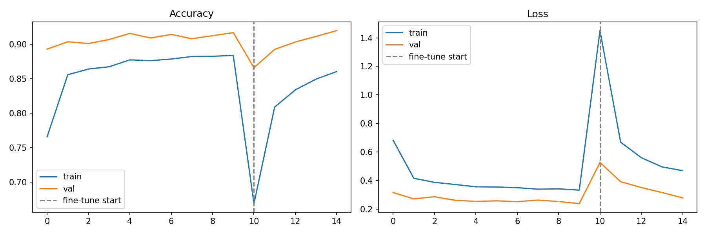
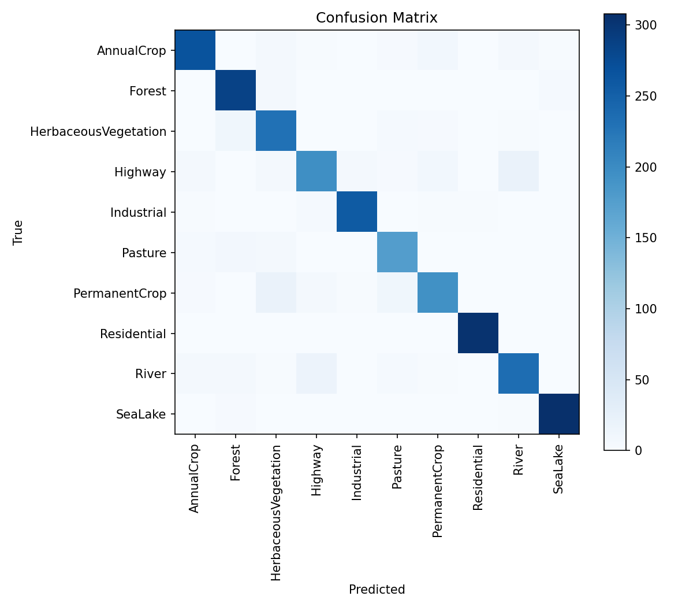

A convolutional neural network that classifies satellite image patches into ten land cover types — forests, croplands, rivers, cities — trained on the EuroSAT dataset and shipped as a working app, not just a notebook.
After completing ISRO IIRS's AI/ML for Geodata Analytics outreach course, I wanted to go past the certificate and build something that actually applies it: a full pipeline from raw Sentinel-2 imagery to a trained classifier to a deployed tool someone else can use. This project covers data preparation, model training and evaluation, and deployment — the parts of applied ML that a ten-hour course can point toward but not fully cover on its own.
From raw imagery to a live prediction, in four stages.
27,000 labeled Sentinel-2 patches across 10 land cover classes, split 80/10/10 for training, validation, and test.
Pixel values scaled to [0,1]; random flips and brightness jitter applied during training to improve generalization.
Three convolutional blocks with batch normalization, global average pooling, and a dropout-regularized dense head.
Upload any satellite patch and get a predicted class with a full confidence breakdown, live in the browser.
Evaluated on a held-out test split the model never saw during training.


Upload a satellite image patch — the model runs directly in your browser, no server needed.
Each patch is classified into exactly one of these categories.
This project follows directly from ISRO's Indian Institute of Remote Sensing (IIRS) outreach programme on AI/ML techniques for geospatial data — the course that introduced the concepts this classifier puts into practice.